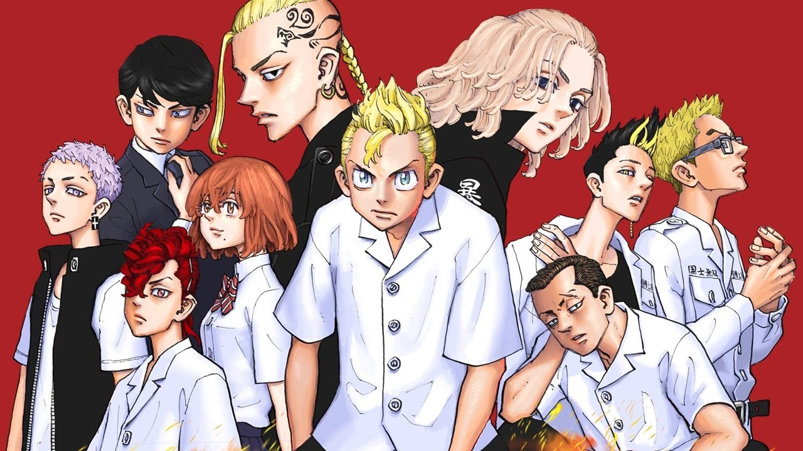

Tokyo 卍 Revengers 東京卍リベンジャーズ
Serie (Sinopsis)
Tokyo卍Revengers 「東京卍リベンジャーズ, Tōkyō Manji Ribenjāzu」 es un manga shōnen escrito e ilustrado por Ken Wakui y publicado por Kodansha. El anime está dirigido por Koichi Hatsumi en LIDENFILMS; la emisión comenzó el 11 de abril de 2021 y finalizó el 19 de septiembre del 2021. También cuenta con una película "Live Action", dirigida por Tsutomu Hanabusa en Warner Bros. Japan.